WMS结算模块设计总结
前言
WMS全称：仓库管理系统（Warehouse Management System），以下提到WMS特指普冷内部系统WMS。仓库管理系统是为仓储行业提供的一套标准系统解决方案，对仓库的进出库货物管理，实现批次效期控制和追溯，能够准确的实时管理仓库货架上的货品库存信息，有效控制并跟踪仓库业务的物流和成本管理全过程。
普冷WMS提供入库业务、出库业务、调拨业务、退货业务、产品管理、货主管理、库位管理、库存管理等，支持多仓同时使用的SaaS平台。
目前普冷服务的业务场景有B2B和B2C两种业务类型，客户群体涉及商超、餐饮、电商等业务范围。客户数量种类繁多，业务操作场景复杂，仓储作业中产生的业务操作费随之复杂多样，造成了单证客服每月账单通过手工的方式难以统计，故需要迫切开发系统自动结算功能。
前期思考
在进行产品设计之前，首要的两个问题需要先了解清楚：
现在手工账单是如何统计的？普冷与各个客户签订的合同是怎样的？
手工账单
废话不多说直接上图（图片中的数字经过处理）
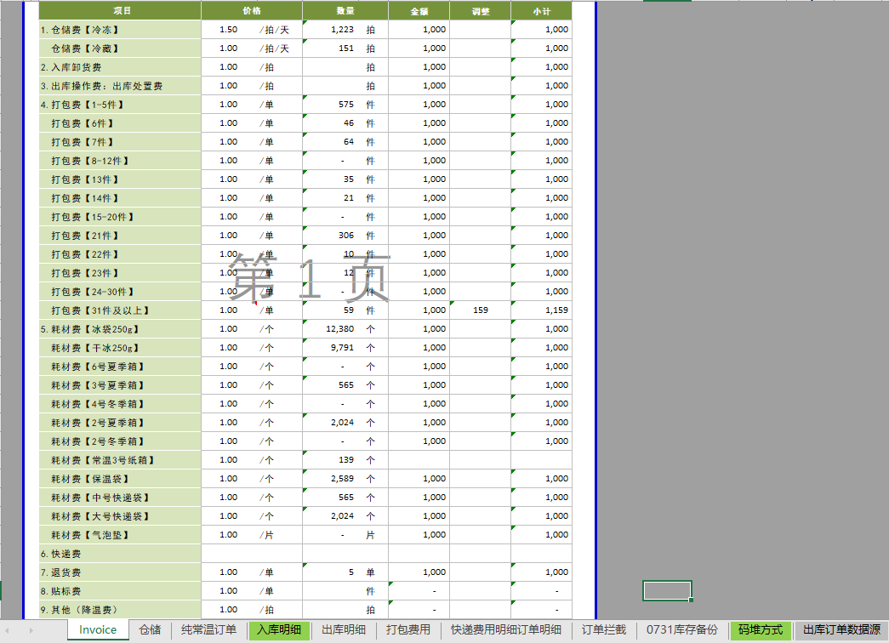
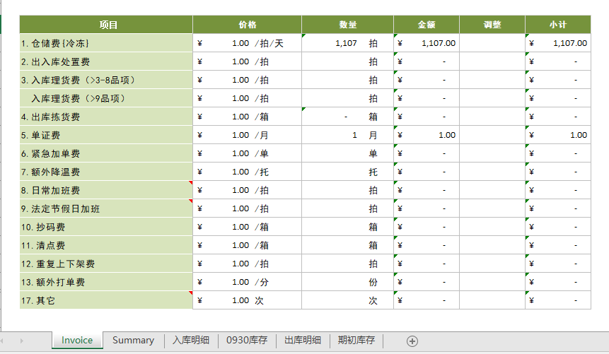
从图片中我们可以看到手工账单主要分两大部分，一个sheet为本月每一个收费项目的总金额：invoice，剩下的sheet则为具体的运营操作明细。具体的计算方式都是通过一些函数将明细进行汇总处理之后，链接到invoice的数量列。
客户合同
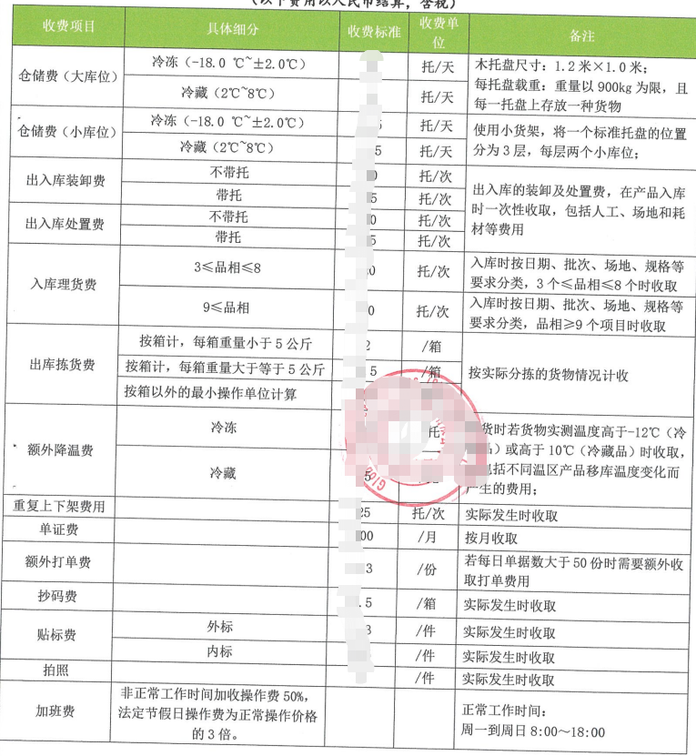
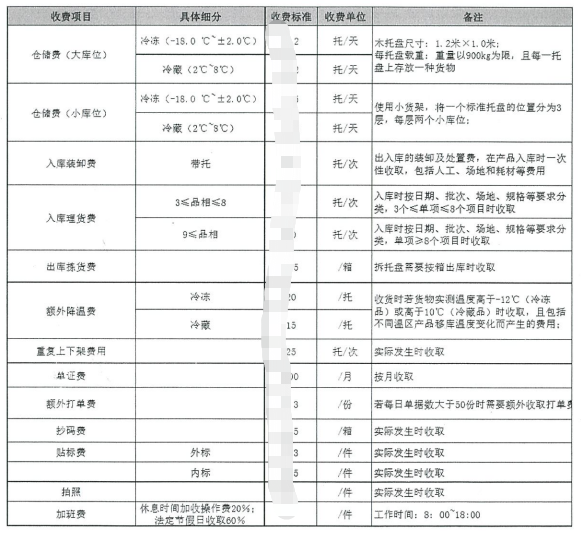
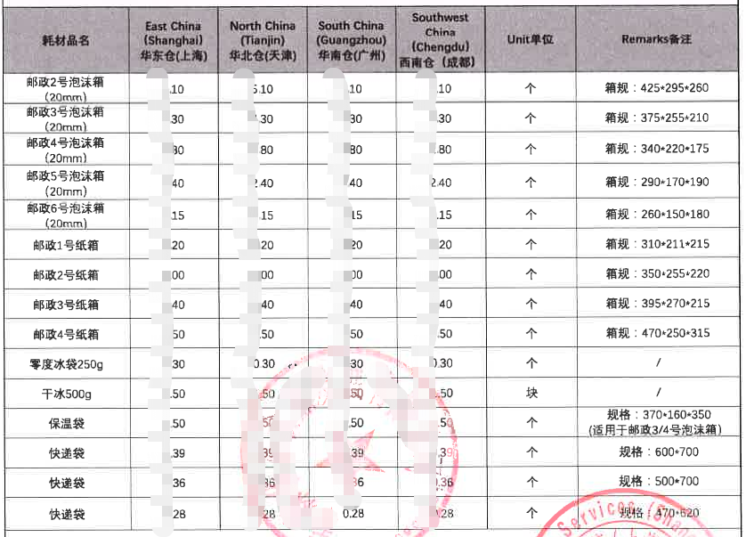
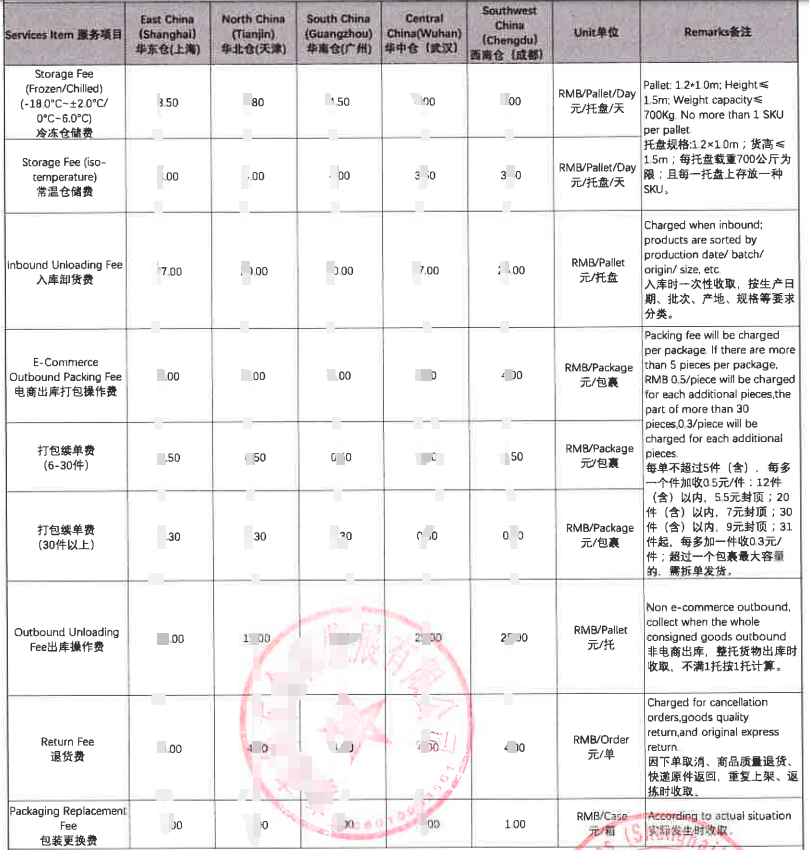
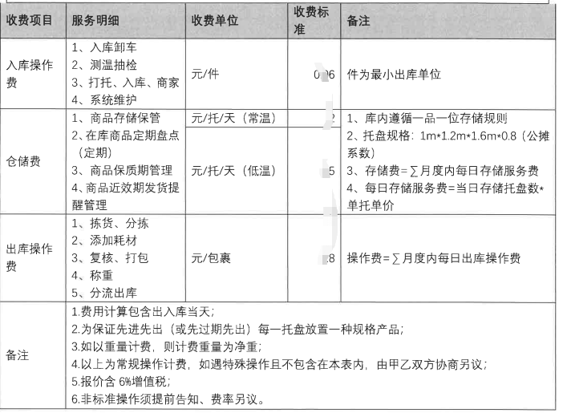
上述图片分别列举2B和2C几个合同的样例，每个客户的合同虽然不同，但是基本的原理和结构是一样的。
这里将当时我分析合同的逻辑描述一下：
所有的合同报价中第一列都是收费项目，而收费项目则是说明都有哪些运营作业是需要收费的。合同中的第二列基本上是说明这个收费项目的一些限制条件，比如下图，总结一下就是说同一个收费项目会根据不同的条件将运作产生的数据计算为不同的价格来收费
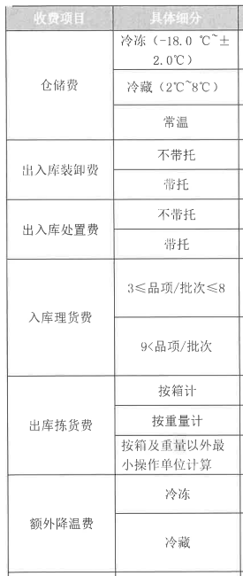
2C部分还有阶梯报价的部分，如下图，我们看最右边的描述，有点像出租车的报价模式，起步价，每增加一件多收多少钱
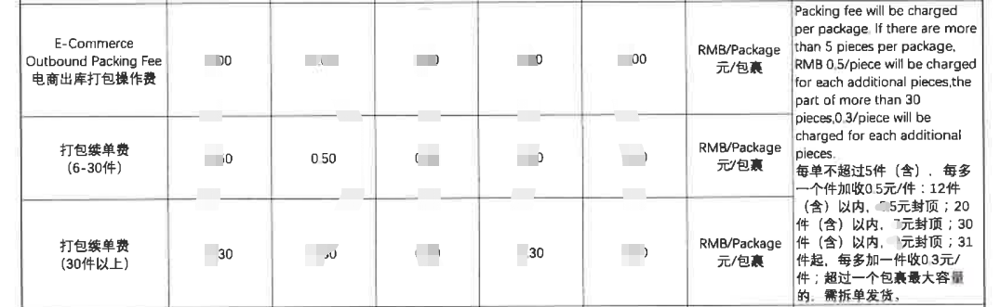
我们再来看下图，主要是收费单位这一列，这一列描述了收费项目是以什么标准进行收费的，有按照托、包裹个数、单子个数、箱数等等，我们这里往WMS系统的数据里面进行对照，无非就是把运营数据按照不同的维度进行了汇总计算，得出的一个数值，比如：（1）仓储费按托来收费的话，那就是要把库存数量值转化为托数；（2）打包费按照每个包裹的件数来收费，其实就是每个订单下面的明细数量总和。其他的收费项目都可已此思路进行推导出收费项目的收费单位到业务数据的表现形式
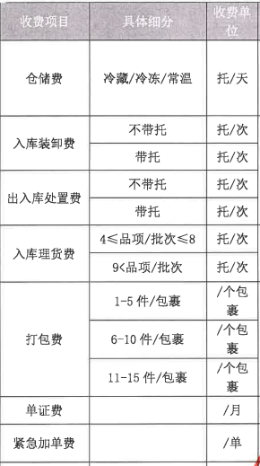
我们将一个合同进行刨析，拆分每一列来分析后，最终能总结出一个合同包含了三个部分：收费的项目、收费项目的条件、收费项目的计算方式。
然后我们再以产品的思维去考虑问题，基本能够抽象出具体的产品概念：
计费项目计费条件：对业务数据行的筛选条件计费因子：对业务数据的不同维度的计算方式
业务抽象化
计费项目
我们先说计费项目，这个也好理解，就是说明收的什么钱，具体到产品中也没有太多的逻辑，可以理解为就是一个类型，因而产品就首先得到一个系统功能：费项管理，功能很简单，我们这里就不展开讲述了。
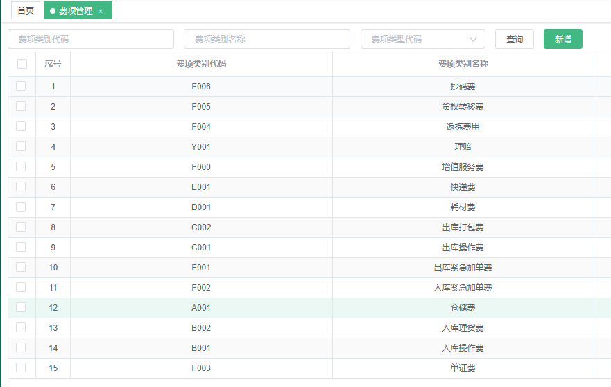
由于自身的业务原因，我们将费项管理之上又增加了一层：货主费项管理。
为什么会出现货主费项这一层呢？是因为不同的客户对于同一个费项的叫法不同，并且从用户的角度来看，更希望费项的名字能够更直观的表达出来具体的收费内容（当然，我们从合同中也能发现这一点）。从系统的角度而言，又不可能因为叫法不同，我们就重新开发一套费项计费方式。因而就又增加了这一层，而最原始的费项管理就真的变成了一种计费的类型。
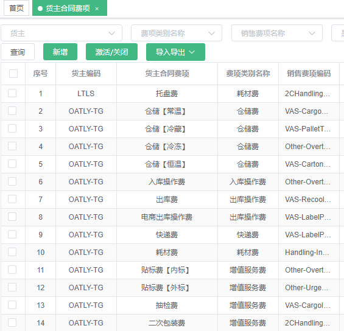
计费条件
计费条件就要带入具体的业务数据去看了，这样会更好理解一些。我们将合同中表格里面表述的内容用语句表达出来，就拿下面这幅图来说：
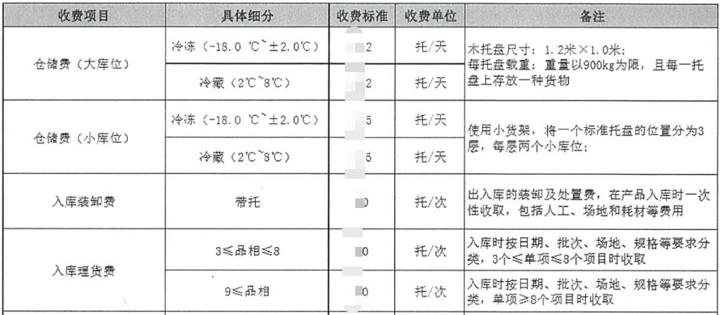
在计算仓储费的时候，如果库位是大库位，并且库位温区是冷冻的话，收费标准是 x元/托/天；
在计算仓储费的时候，如果库位是大库位，并且库位温区是冷藏的话，收费标准是 x元/托/天；
在计算仓储费的时候，如果库位是小库位，并且库位温区是冷冻的话，收费标准是 x元/托/天；
在计算仓储费的时候，如果库位是小库位，并且库位温区是冷藏的话，收费标准是 x元/托/天；
在计算入库装卸费的时候，如果是带托的，收费标准是 x元/托/次；
在计算入库理货费的时候，如果3<= 品项<=8的话，收费标准是 x元/托/次；
在计算入库理货费的时候，如果9<= 品项 的话，收费标准是 x元/托/次；
总结一下：什么东西在满足什么条件的时候，收费是什么。
那么我们又能从此分析中抽象出一个系统概念，费项需要能够支持各种维度的筛选条件，并且这些条件要能够支持多层的过滤，一层层筛选。
我们结合自己业务数据的实际情况，将可能会出现的筛选条件都统一出来，得出一个系统功能：条件管理
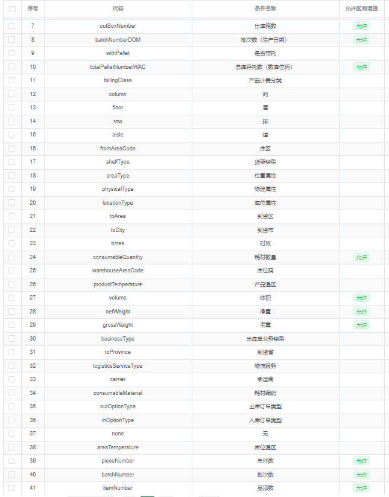
每一个条件其实就是对应一条数据的某个字段，熟悉数据库的同学可能会更好理解，数据库中的一列就可以做为一种条件存在。但是也是有前提的，并不是所有的列都可作为条件，必须是那种在一定的可变范围内的，例如：温区，对于冷链仓储来说，温区就那三四种。条件具体的使用方式，我们继续往下看，后面会慢慢带入。
计费因子
计费因子单纯从字面意思来看比较抽象，我们还通过举例的方式来 说明。
例如：我们都知道计算费用用数学公式表示就是：总费用 =数量 * 单价。单价是人定的，我们先不管，来看【数量】这个变量，带入具体的业务场景来看：仓储费 = 总托数 * 单价，那么我们是不是要先拿到这个总托数的值，然后系统才能去进行计算。
我们再看一个例子。
例如：出库拣货费 = 总箱数 * 单价，【总箱数】这个值我们也需要让系统进行计算出来。
好了，例子就说这两个，其他的费用计算都是同样道理，只是每个费用计算的时候这个因子的参考值不同而已。
综上，我们总结并设计了系统功能：因子管理
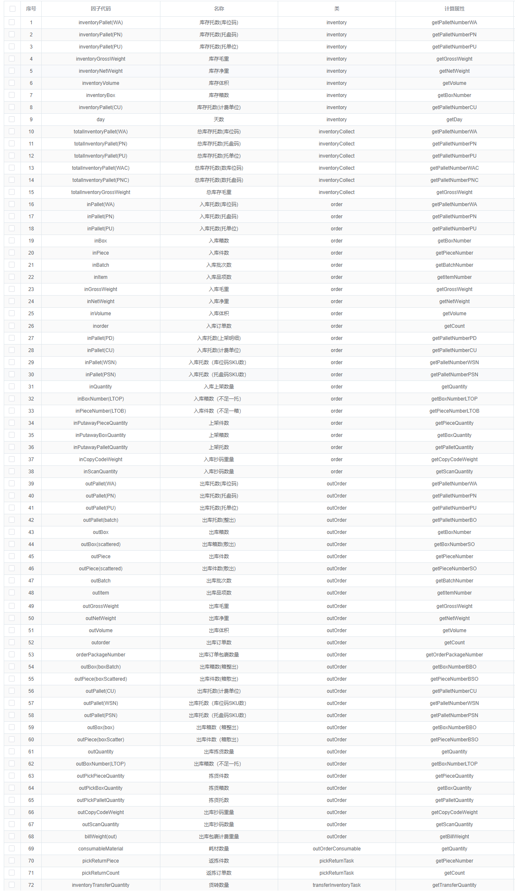
可以看出每个因子都定义了一种计算方式，具体到程序里面就是一个个方法，每个方法就是一个个小型的算法库。而这种方式又能做到无限扩展。
想必到这里大家应该有一些基本的了解了，可能会问，这三个东西咋用？好像没啥关联啊。是的，到目前为止他们还没有串起来，我们继续头脑风暴。
三者整合
我们在整理一下思路，要得到一个费项的费用，我们首先要选择一个计费项目，如果有条件的话再把计费条件加上，然后再选择一种计费因子，这样他们三者的关系就建立出来了。
首先我们要整合的关系是计费因子和计费条件，并且我们也只会将两者先进行关联整合，如下图：
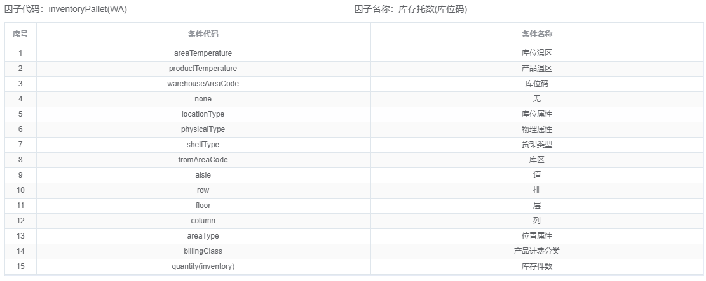
图片所示为计费因子=库存托数(库位码)来举例，下面绑定了它可以按照什么样的条件来产生这个因子的值。
我们可以这样理解，有一群小朋友，我们现在要进行分组：
分组方式一：5岁以下的一组，5到10岁的一组，10岁以上的一组；分组方式二：男生一组，女生一组分组方式三：先按照分组方式一分组，再按照分组方式二分组
以不同的方式来分组得出的组数是不是不一样？上面的计费因子就等于小朋友分组后的组数，计费条件就是分组的方式，这样按照不同维度计算出来的结果就会不一样。这样的系统设计可以最大成度的覆盖更多的应用场景。
当然每一个因子能够支持的计费条件都是自己需要按照业务场景事先设定的，不是随便绑定的。
对于计费项目其实我们并没有和计费因子+计费条件进行绑定，因为就像前面说的计费项目就是一个类型一个说明，就好比拿仓储费来说，没有人规定只能从库存的数据上面计算仓储费，实际的业务场景也有可能会从出入库订单层面去计算仓储费。
另外不进行关系绑定，又能使系统支持的业务场景更加丰富，就算没有前面的实际业务场景，我们不进行关系绑定也无可厚非，如果你非要拿库存托数去计算订单操作费，计算出来的是错误的，也只能说明你自己配置错了。
还有一个原因就是系统架构设计的思维了，这个我也不知道怎么表述了…
当然，此处不绑定并不代表永远都不绑定了，请看图：
上面所有的铺垫，其实就是为了得出这个图，好累啊。
下面那一行就是条件，并且是支持添加子条件，是一个树结构的设计，不同的条件呢，就会有不同价格，其实上面文字里面也有提到这一点。（额…界面样式可以吐槽，但是逻辑就是那样）
很好，我们已经得出了一个最基本的三者整合设计，发挥想象，结合业务场景，考虑可扩展性，考虑适配更多的场景，最后成果：
也可以是这样：
又或者是这样：
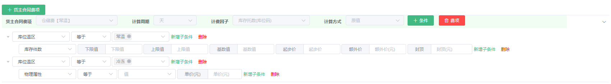
这样：
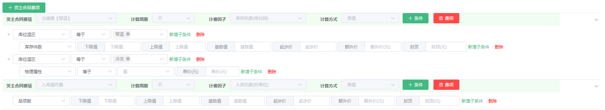
只有想不到，没有做不到（夸张句，请忽略）。
最终三者的整合已经全部呈现出来，而呈现的方式我们仍然是通过合同的方式将其绑定。我们在系统中增加了：应收计费配置，其实就是通过系统来呈现出一张完整的合同，如图：
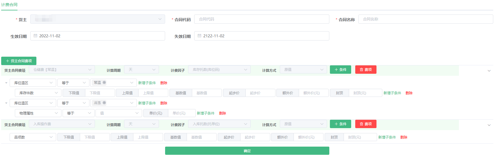
至此，我们通过刨析合同、场景分析，将一张纸抽象进了系统，配置出一个能让计算机程序识别的东西：应收计费配置。
结束了吗？No No No，这才刚进入正题。
数据源
懂系统懂程序的同学看到这里应该已经有疑问了，既然是配置，那配置配好了咋用？谁来用？何时用？
这些问题我们先放放，最关键的一个东西：数据。
既然我们是在讨论WMS计费，那计谁的费？当然是业务操作所产生的数据费用。
数据呢？数据在WMS的业务数据库。
可是业务数据是非常细非常零散的数据，而我们计费都是取的不同维度下的总数，如果我们直接拿业务数据去处理的话，恐怕有点难度。从架构的角度来看，就不行，数据量运算逻辑大的话，会对业务数据库造成压力，可能导致宕机。
既然不能直接从业务数据库直接取，那就搞一个主从同步？从从库取数据。差不多是这个思路，但又不完全是，只对了一半。
还是要分析场景：
（1）计费取到的都是按照不同维度下进行计算后的数据，业务数据库无论是主库还是从库都是没有办法直接取到的，从哪个库取都不合适
（2）系统计算费用的逻辑非常复杂，压力要进行分摊，不能集中在一个时间点处理或者一步全部处理完，容易宕机
基于以上考虑，再结合自己业务和系统的架构我们引入新的数据存储机制：业务数据中心
整体的数据处理机制如图所示：
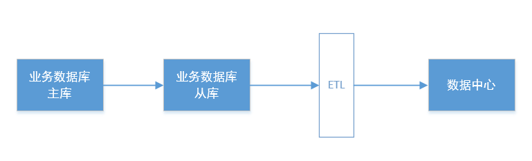
在进行ETL数据抽取时，我们已经按照相关的计费因子将系统的数据进行了提前计算，这样就同时满足了上面两点的顾虑。
存储到数据库中的数据大概是这样的：
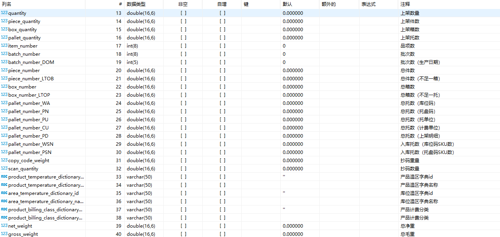
通过右边的注释可以看出，数据中心的数据已事先计算，而计算好的数据又恰巧是对应我们计费因子的，这样在进行费用计算时只需要通过相关的因子去取对应列的数据即可，这样将压力进行分摊，提前处理，将系统资源合理分配开，这样对业务和应用都不会有较大的影响。
数据中心的数据我们是按天进行抽取的，我们也称之为：日结数据。
现在我们通过每天将业务数据抽取到数据中心产生每日的日结数据，解决了数据源的问题，接下来我们继续来说开头的那几个疑问，这些数据怎么用？何时用的问题。
开始计费
在开始之前，有必要简要说明一下整体计费的流程：
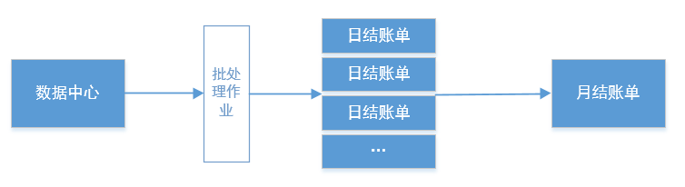
流程如上图，分两步，先生成日结账单，再由日结产生月结账单。
日结账单：每个客户每天会产生一份日结账单月结账单：每个客户每个月按照账期将每天的日结账单汇总后，产生一份月结账单
由数据中心产生日结账单，可以看到我们这里使用了批处理作业的方式，就是通过定时任务每天几点开始执行，而具体的处理逻辑，定时任务则是需要按照用户通过应收计费配置设置的每个客户合同的计费方式，如图：
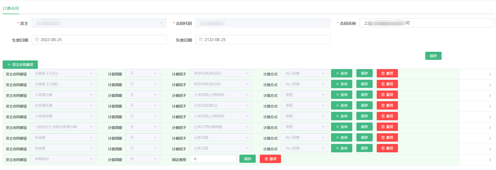
系统会参照上图的配置规则将数据中心的数据进行处理加工产生一条日结账单：
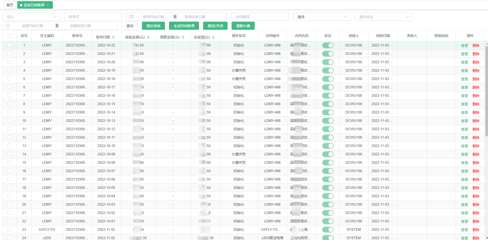
具体的执行逻辑我们这里就不展示了，这是属于开发层面的东西。
从上述日结账单的图片中可以看出，每一个客户每天都会产生一条日结账单数据。
我们随便找一天数据，点击后面的【查看】可以看到里面具体的计费项目：
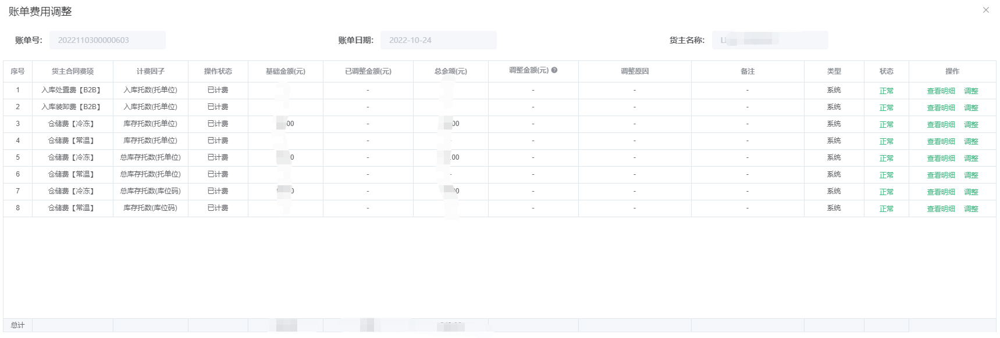
这里所展示的货主合同费项就是此货主配置的应收计费配置里面的一条条配置。
而月结账单和日结账单一样，就是把多条数据进行汇总成一条数据的呈现方式，我们来看一条月结账单的费项明细：
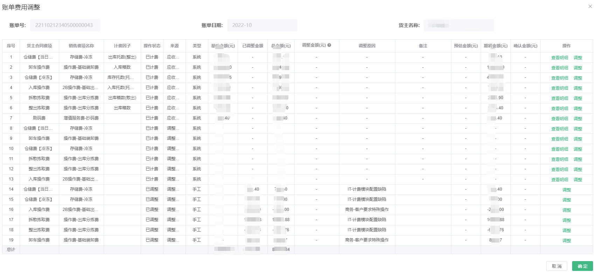
结语
以上就是设计WMS结算模块的全部思路，当然本文章也不能将全部的细节都呈现出来，主要是记录本人在设计这一块功能时的整个历程以及是如何分析这一部分的内容，如何将业务场景进行一步步抽象成系统可识别语言。
文章的顺序虽然是先分析了合同，后抽象三个系统名词：费项、因子、条件，但是自己大脑还是要有一个整体的思路和布局，不然后面的数据中心的设计，也衔接不上前面定义的功能。
图片中的系统样子也不可能一步就实现的，也是通过后续上线后一步步完善的，用户提需求再进行开发，比如计费因子刚上线的时候也就10个左右，现在可以看到系统里面已经有几十个了，但是整体的架构和流程并未改动任何地方，现在的使用情况无非就是哪个客户的计费比较特殊，我们需要再重新定义一个新得计费因子来进行满足。
具体的使用情况，我这里就不做描述了，肯定不会差的，相信后面只会越来越好。
放眼整个WMS功能，本人自己觉得结费这一块做的应该是最好的，可圈可点，当然任何一个产品功能不可能满足所有的业务场景，是吗？？